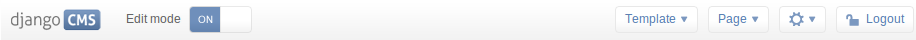
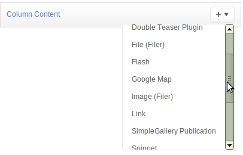

Placeholders are special model fields that django CMS uses to render user-editable content (plugins) in templates. That is, it’s the place where a user can add text, video or any other plugin to a webpage, using either the normal Django admin interface or the so called frontend editing.
Placeholders can be viewed as containers for CMSPlugin instances, and can be used outside the CMS in custom applications using the PlaceholderField.
By defining one (or several) PlaceholderField on a custom model you can take advantage of the full power of CMSPlugin, including frontend editing.
You need to define a PlaceholderField on the model you would like to use:
from django.db import models
from cms.models.fields import PlaceholderField
class MyModel(models.Model):
# your fields
my_placeholder = PlaceholderField('placeholder_name')
# your methods
The PlaceholderField takes a string as its first argument which will be used to configure which plugins can be used in this placeholder. The configuration is the same as for placeholders in the CMS.
Warning
For security reasons the related_name for a PlaceholderField may not be surpressed using '+' to allow the cms to check permissions properly. Attempting to do so will raise a ValueError.
If you install this model in the admin application, you have to use PlaceholderAdmin instead of ModelAdmin so the interface renders correctly:
from django.contrib import admin
from cms.admin.placeholderadmin import PlaceholderAdmin
from myapp.models import MyModel
admin.site.register(MyModel, PlaceholderAdmin)
Now to render the placeholder in a template you use the render_placeholder tag from the placeholder_tags template tag library:
{% load placeholder_tags %}
{% render_placeholder mymodel_instance.my_placeholder "640" %}
The render_placeholder tag takes a PlaceholderField instance as its first argument and optionally accepts a width parameter as its second argument for context sensitive plugins. The view in which you render your placeholder field must return the request object in the context. This is typically achieved in Django applications by using RequestContext:
from django.shortcuts import get_object_or_404, render_to_response
from django.template.context import RequestContext
from myapp.models import MyModel
def my_model_detail(request, id):
object = get_object_or_404(MyModel, id=id)
return render_to_response('my_model_detail.html', {
'object': object,
}, context_instance=RequestContext(request))
There are two ways to add or edit content to a placeholder, the front-end admin view and the back-end view.
Probably the simplest way to add content to a placeholder, simply visit the page displaying your model (where you put the render_placeholder tag), then append ?edit to the page’s URL. This will make a top banner appear, and after switching the “Edit mode” button to “on”, the banner will prompt you for your username and password (the user should be allowed to edit the page, obviously).
You are now using the so-called front-end edit mode:

Once in Front-end editing mode, your placeholders should display a menu, allowing you to add plugins to them. The following screen shot shows a default selection of plugins in an empty placeholder.

Plugins are rendered at once, so you can get an idea how it will look in fine. However, to view the final look of a plugin simply leave edit mode by clicking the “Edit mode” button in the banner again.
There are some hard restrictions if you want to add custom fieldsets to an admin page with at least one PlaceholderField: